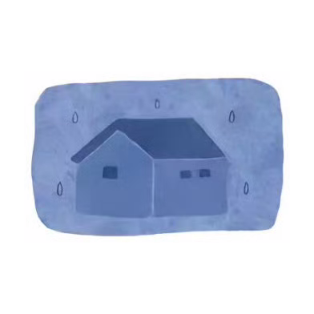
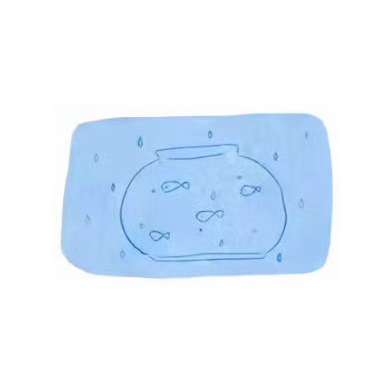
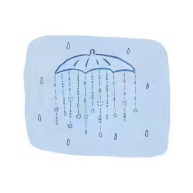
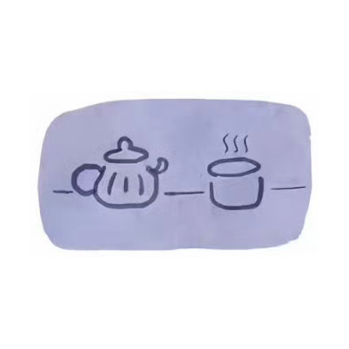
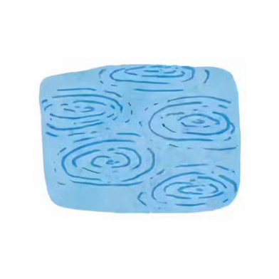
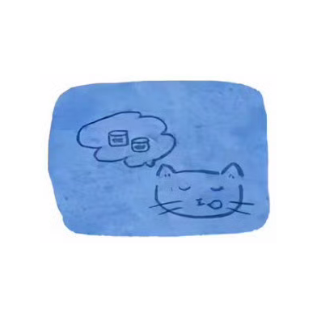
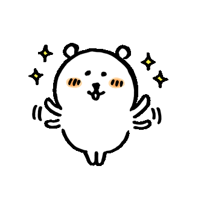

敲一下，给今天加一点好兆头。
今日已敲 0 下
听听课、看看视频，让大脑换个频道。
把链接发给我，解析整理成 assets 资料包；替换后刷新缓存即可更新。
每周、每月的学习记录，一目了然。
所有内容保存在当前浏览器本地。清浏览器数据会删除记录，所以建议定期导出备份。
开启后，每天会自动把昨日未完成的任务顺延到今天。关闭后需要手动补前日。
导出会生成 JSON 文件；导入会覆盖当前网页内的小树考研上岸数据。建议每周导出一次，存到 iCloud 或文件 App 防丢失。
如果刷新后数据丢失，点这里测试本地存储是否正常。
数据已开启云端自动同步，换设备打开会自动拉取最新数据。也可手动用同步码在设备间传输。
安卓 Chrome / Edge 可点"添加到桌面"。iPhone Safari 请点分享按钮，再选"添加到主屏幕"。
熊：休息不是偷懒，是给脑子充电。
选择后会加入对应细分类和统计。
会保存到对应科目的时间轴里。
开始 / 结束 / 时长